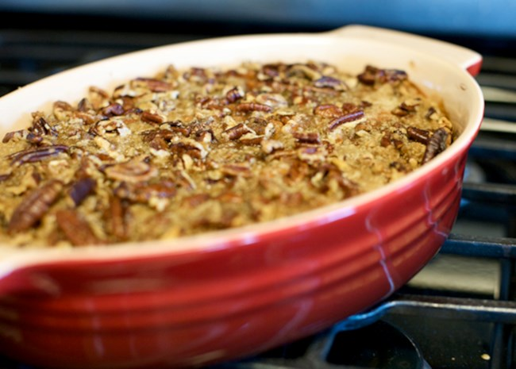

Yummy Sweet Potato Casserole

Description
My family begs me to make this creamy baked dish every Thanksgiving and Christmas. What makes it so good is the pecan topping! Try it and I'm sure it will become your new tradition!
Ingredients
- 4 cups sweet potato, cubed
- ½ cup white sugar
- 2 eggs, beaten
- ½ teaspoon salt
- 4 tablespoons butter, softened
- ½ cup milk
- ½ teaspoon vanilla extract
- ½ cup packed brown sugar
- ⅓ cup all-purpose flour
- 3 tablespoons butter, softened
- ½ cup chopped pecans
Steps
- Preheat oven to 325 degrees F (165 degrees C). Put sweet potatoes in a medium saucepan with water to cover. Cook over medium high heat until tender; drain and mash.
- In a large bowl, mix together the sweet potatoes, white sugar, eggs, salt, butter, milk and vanilla extract. Mix until smooth. Transfer to a 9x13 inch baking dish.
- In medium bowl, mix the brown sugar and flour. Cut in the butter until the mixture is coarse. Stir in the pecans. Sprinkle the mixture over the sweet potato mixture.
- Bake in the preheated oven 30 minutes, or until the topping is lightly brown.